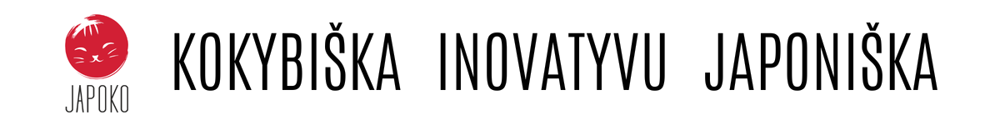

| 10+ METŲ PATIRTIS ● GREITAS PRISTATYMAS | ||||||||||||||||||||||||
 | ||||||||||||||||||||||||
|
Prieš pirmąjį atradimą
JEIGU DAR GALVOJATE…JAPOKO prasidėjo nuo smalsumo Japonijai. Pasitikėjimą užauginome atrinkdami, išbandydami ir pažindami gamintojus patys. | ||||||||||||||||||||||||
 | ||||||||||||||||||||||||
|
JAPOKO patirtis
PASITIKĖJIMAS, AUGINTAS 10+ METŲ
| ||||||||||||||||||||||||
| ||||||||||||||||||||||||
Kad būtų paprasta NUO PASIRINKIMO IKI DURŲ | ||||||||||||||||||||||||
| ||||||||||||||||||||||||
Ką sako atradę LaQ? TĖVŲ IR MOKYTOJŲ ŽODŽIAITikros patirtys, kuriomis JAPOKO bičiuliai pasidalino išbandę LaQ. | ||||||||||||||||||||||||
| ||||||||||||||||||||||||
8 KRYPTYS PRADŽIAI KĄ KITI ATRADO JAPOKO?Keturi perkamiausi pasirinkimai ir keturios dovanos, kai norisi išrinkti lengviau. | ||||||||||||||||||||||||
| ||||||||||||||||||||||||
JEI REIKIA PATARIMO – PARAŠYKITE Padėsime atrasti pagal žmogų, progą ar amžių. Ne daugiau pasirinkimų – aiškesnis pasirinkimas. Metodija ir JAPOKO komanda | ||||||||||||||||||||||||
| MB „Creator Japonicus“ · Bajorų g. 9, Migūnai, Vilniaus raj., LT-13243, Lietuva japoko.com · info@japoko.com Šį laišką gavote, nes užsiprenumeravote JAPOKO naujienas. Atsisakyti naujienlaiškio |